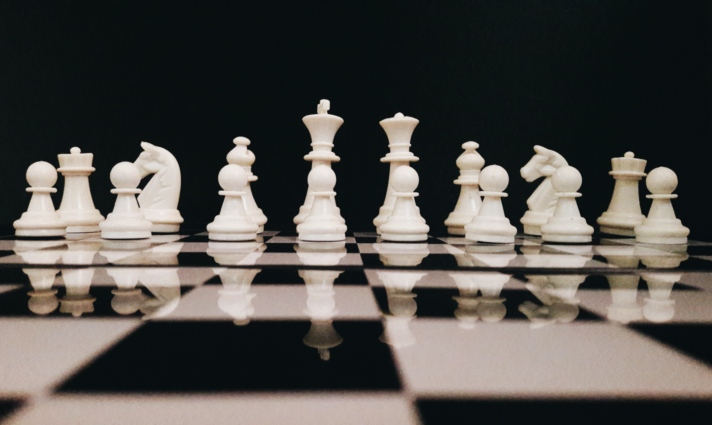

Learn about Chess Pieces

The King
The king, marked with a cross-bearing crown,
can move in any direction one square.
It can move horizontally, vertically, or diagonally.
The Queen
Next is the king’s faithful companion: the queen.
Unlike her lazy husband,
the queen can move any amount of squares in any direction
– horizontally, vertically, or diagonally.
This makes her the most powerful piece at your disposal by far.
The Bishop
There’s one more piece that can move any number of squares: the bishop.
The bishop does have one curious feature, however.
Because it can only move on the diagonals, it cannot move to different color squares.
In other words, your bishop starting on a light square will always stay on the light squares,
while your bishop starting on a dark square will always stay on the dark squares!
The Knight
The knight, resembling a horse on the
chess board,
is a bit of an odd creature.
For one thing, it moves in a way
that no other chess piece –
not even the queen – can.
The knight moves in an “L” shape,
two spaces vertically and one space
horizontally,
or the opposite: two spaces horizontally
and one space vertically.The second curious
feature of the knight is that it is the only
piece that can jump over other pieces.
Every other piece and pawn can be blockaded
by its allies or the opponents’ pieces and pawns,
but not the knight.
As long as a fellow piece or pawn does not occupy it,
the knight can jump to any square you wish
The Rook
Next is the rook.
The rook, looking like the tower of a castle, is also a powerful piece.
It has the ability to zoom all over the board, horizontally or vertically,
any number of squares, like so:
The Pawn
Now that we know how the pieces move, that brings us to the pawns.
These little guys actually have the most complicated rules,
but don’t worry – not that complicated!
Pawns can move one space forward only, unless its their first move:
then they can move two squares (or one square, if that’s all you want!).
Pawns are also the only part of your army that cannot move backward,
which is quite an important feature of the game.
Any time you move a pawn, you are doing something permanently which cannot be undone!
Pawns can also transform.
When you advance a pawn all the way to the other side of the board,
you can change the pawn into any piece you want except the king.
That’s right, you can even have another queen if you want.
And for that reason,
it’s perhaps no surprise that a common strategy is to get a pawn to the other side of the board,
and stop your opponent from doing the same at all costs!
ASDAHChessclub @ 2023